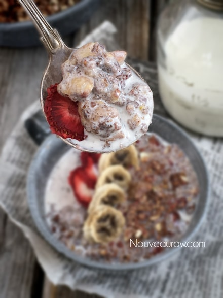

Strawberry Banana Nut Muesli

~ raw, vegan, gluten-free ~
This simple cereal is packed with flavor, with the sun-kissed sweetness of the strawberries, the earthy richness of maple syrup, the creaminess of the homemade almond milk and the spicy, woodsy flavor of the cinnamon.
I am in love with muesli style cereals. I love them with almond milk poured over the top… taking in one spoonful at a time. I love them soaked in milk for an hour. I even love them soaked overnight… sitting there waiting for me to wake up! Another great way that I really really enjoy is with yogurt swirled in. It just sends me to the moon… don’t forget to get a round trip ticket. hehe
Bugs in my kitchen!!
So, I was in the kitchen creating a few recipes. I had Christmas music playing (yes Christmas music), I was singing, dancing, and swiftly moving about the kitchen… tossing spices here, oats there, and just having a grand ole’ time. With a dehydrator tray in hand, making my way to the pantry, I spotted a bug on the floor.
In all my grace and glory, I screamed and darted the opposite direction… losing balance of the tray in hand, I slipped and tripped and wiped out on the floor… I was now eye level with the BUG!! OMG!!!! I froze. I quickly marveled at my skills which allowed me to keep the tray high in the air with all cereal still on it.
I took a deep breath, turned my head and spied the bug…. I squinted to focus on just what type of bug it was that caused SUCH a commotion… it was a raisin!! OY-VEY! I regained my composure, stood up, put the tray in the dehydrator, popped the “bug” in my mouth and limped away (think I pulled a muscle in my right ovary! lol) Ever have days like that? The things I go through just to create a cereal! Hehe, I really hope that I have somehow inspired you to make this recipe. I would love to hear what you think down below in the comment section.
Yields roughly 5 cups muesli
- 2 cups gluten-free rolled oats, soaked
- 1 cup raw cashews, soaked
- 1 cup raw almonds, soaked
- 1 cup raw pecans, soaked
- 1 cup flax seeds
- 8 ripe bananas
- 16 oz strawberries, organic (I used frozen ones that were thawed)
- 1/2 cup maple syrup or equivalent
- 3 Tbsp chia seeds
- 1 Tbsp lemon juice
- 1/2 tsp sea Himalayan pink salt
- 2 bananas, ripe (I sliced these, tossed them with cinnamon and then dehydrated)
- 2 cups fresh strawberries, organic (sliced and dehydrated)
Preparation:
- After soaking the oats, drain and rinse for 2 minutes under cool water.
- Use your fingers to agitate them.
- Hand squeeze the excess water and place in a large bowl.
- Drain and rinse the nuts. Place them in the food processor, pulse chop into small- medium bits. Add to the bowl with the oats and flax seeds.
- Place the flax seeds in grinder and pulse a few times, just enough to crack their shell. This will help your body in absorbing their nutrients. Don’t over process and make it into flour.
- Back in the food processor combine; 8 bananas, 16 oz strawberries, sweetener, chia seeds, lemon juice, and salt. Process until everything is nice and creamy.
- Pour the “sauce” over the oats/nuts/seeds and mix until everything is well coated.
- Set aside and give the chia/flax seeds some time to absorb any loose liquid. Maybe 10-20 minutes.
- During this wait time, you can tend to the remaining bananas and fresh strawberries.
- Take the 2 remaining bananas, the 2 cups of fresh strawberries and slice them all up. Place them on the mesh sheets that come with your dehydrator.
- Now take the cereal mixture that has thickened up and spread it on the non-stick teflex sheets. The thinner you spread it, the quicker it will dry.
- Dehydrate everything at 145 degrees (F) for 1 hour, then reduce to 115 degrees (F) for 16-24 hours.
- At the half-way mark remove the teflex sheets, allowing the granola to continue drying on the mesh sheets until it is dry.
- Dry times will always vary depending on the climate, humidity and how thick or thin you spread the mixture.
- Once done and cooled, place in the food processor and process until it reaches a small crumble.
- Store in a glass container.
- Enjoy with milk, yogurt, or even juice. I like to add almond milk and let it sit overnight. It creates a nice porridge-like texture with small crunchy bits.
The Institute of Culinary Ingredients™

What is Himalayan pink salt and does it really matter? Click (here) to read more about it.- Are oats gluten-free? Yes, read more about that (here).
- Are oats raw? Yes, they can be found. Click (here) to learn more.
- Do I need to soak and dehydrate oats? Not required but recommended. Click (here) to see why.
- Learn how to grind you own flaxseeds for ultimate freshness and nutrition. Click (here).
Culinary Explanations:
- Why do I start the dehydrator at 145 degrees (F)? Click (here) to learn the reason behind this.
- When working with fresh ingredients, it is important to taste test as you build a recipe. Learn why (here).
- Don’t own a dehydrator? Learn how to use your oven (here). I do however truly believe that it is a worthwhile investment. Click (here) to learn what I use.
© AmieSue.com